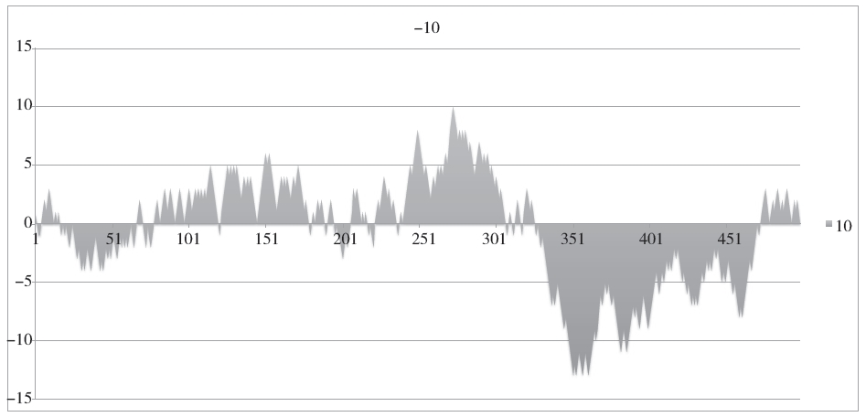
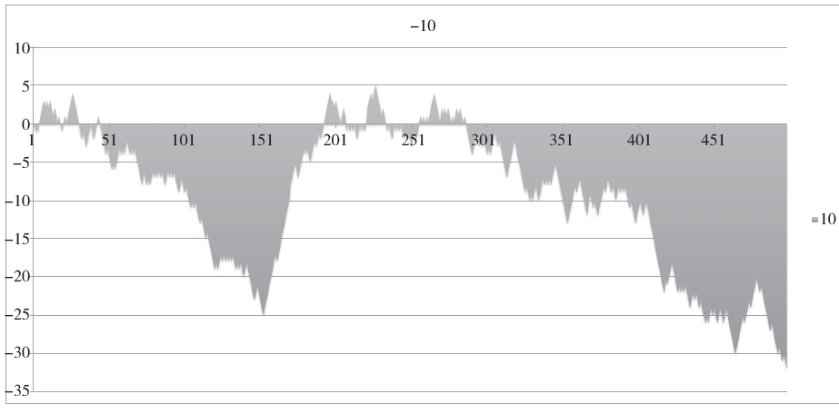
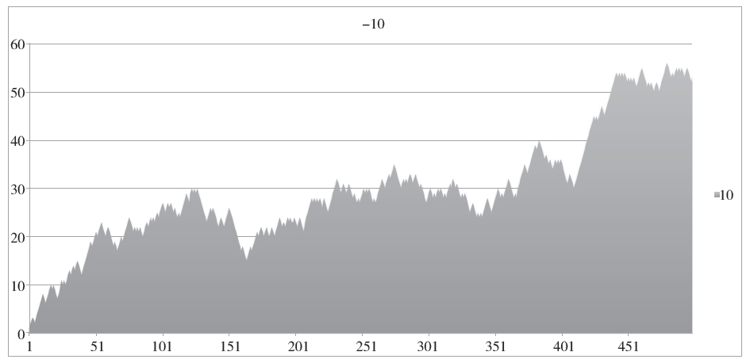
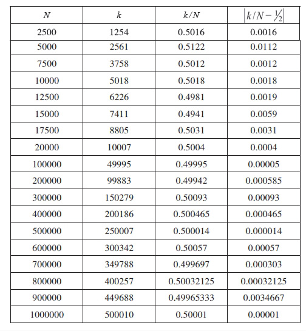
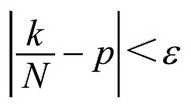
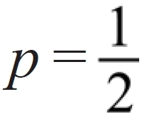
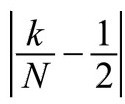
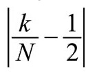
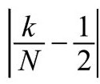
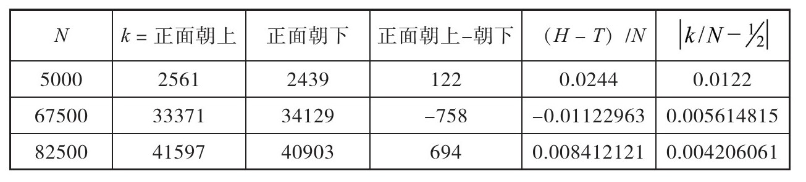

——彼得·梅达沃将军，《冥王的理想国》
根据世界卫生组织统计，全世界男婴出生人数与总出生人口之比为0.515。[60]某些地区或国家男女出生率相差很大。墨西哥的男女比率很低，美国和加拿大高于平均比率[61]。但是从全世界人口（70亿）来看，男女出生的概率几乎持平。原因很简单。人体精子的X和Y染色体的数量相同，它们与卵子中X染色体结合的机会相等。这是一个公平的抛硬币游戏。
硬币抛投一百万次后，我们可能期望最后几次硬币正面朝上。但我们可以期望看到连续100次正面朝上吗？摇币器告诉我们，虽然硬币抛掷轨迹存在随机干扰，硬币可以100%正面朝上。
公平的抛硬币正面朝上概率为1/2。从数学知识我们知道，随着抛掷次数增加，正面朝上和朝下的比率将越来越可能接近于1。经验判断混淆了最后一句话的意思，认为连续的正面朝下将由连续正面朝上来弥补。我们很容易受骗得出错误的结论，以为如果长时间硬币正面没有朝上，那么其出现的可能性将增大，尽管我们知道，理论上来说，每抛一次硬币，正面朝上或朝下的概率几乎一样。只是人们倾向于混淆结果和频数之间的差别。
硬币连续正面朝上的情况可能会发生。我曾经看到过。似乎听上去很奇怪，但想想：假设你抛掷硬币10次，7次正面朝上，那么硬币正面朝上和朝下的比例为7:3。一般的直觉会认为接下来的10抛，正面朝下的情况会超过6次，从而抵消前一轮多于期望值的正面朝上次数。但是硬币对曾经做过的事情没有记忆，只有观察结果的人才会记录历史。没什么可以阻挡接下来的1000次抛硬币游戏中正面朝上的情况发生，但如果真的发生了，我们会惊讶不已。

图6.1 正面朝上减去反面朝上的累积频数
图6.1是计算机给出的抛掷500次硬币的累积结果（+1代表正面朝上，-1代表正面朝下）[62]，横线代表0。正面和反面交替领先。这是机会均等的两匹马的赛马比赛。通常直觉判断认为抛硬币结果图应该是在横线0上下浮动，而不是像上图那样。但往往结果是图形长时段地偏向一边。
理论上的绝对随机和现实世界的绝对随机不同。在塑料球中旋转以确定彩票中奖号码的编号乒乓球并不是随机漏到通道上，不过对于观众来说，它们肯定是在产生难以预测的数字。美国足球赛上决定开球的抛硬币也绝不是随机的。事实上，抛硬币的结果是简单的物理学问题。摇币器可以任意次抛掷硬币——1000次，1000000次——以表明每次硬币都可能正面朝上。
抛掷硬币的最新实验表明，即使是完美的硬币，抛掷的轨迹也与开始的时候有偏差，抛掷结果取决于硬币的正态和角动量矢量之间的角度。换句话说，硬币的运动轨迹取决于它最初的条件。戴康尼斯、霍尔姆斯和蒙哥马利建造了一台投币器，通过弹簧棘轮抛掷硬币。[63]任何开始正面朝上的硬币通过这个机器抛掷后仍旧正面朝上（100%）。由此可以看出，抛硬币游戏是物理学问题，不是随机的。人们抛硬币的手和环境中的各种变量都会导致看似随机的结果出现变化。
但是我们常被假象欺骗，当硬币在空中犹如慢速旋转的陀螺仪时，它看上去的确在转动。硬币运行的方向由其角动量矢量决定，而角动量矢量永远是向上的。因此正面朝上的硬币遵循轨迹运行时可能永远正面朝上，但给人以正面和反面旋转的假象。
如果抛硬币的结果由千里之外的地表震动或太平洋上爱管闲事引发混乱的蝴蝶来决定，情况就不同了。但不同既不指合情合理也不指透明可测。硬币抛掷结果或许随机性强，但人们对随机的感知往往与我们对随机结果的预感不一致。既然硬币对过去的结果没有记忆，如果抛掷时硬币连续100次正面朝上，我们不应该感到惊讶，但我们往往会惊讶不已。

图6.2 正面朝上减去反面朝上的累积频数
图6.2向我们展示了一个奇怪的情况。抛投结果一直如我们所愿，直到接近45次时结果出现反转，硬币正面朝下。接下来近105次抛投正面朝下都“非常抢手”！然后再次出现合理期，正面持续朝上，累积值接近0。然而在约第286次时，反面朝上再次领先。这并非违背我们的直觉，认为应该出现什么结果。随着抛掷次数无限增多，正面朝上和朝下的实际比例将逐渐接近1，只是我们短时间内难以看到这个结果。在第500次时，反面朝上为正面朝上的12倍。这两组数据看上去非常接近，但后续累积结果差异却很大。例如，看看图6.3展示的下一轮抛掷。

图6.3 根据抛掷次数硬币正面朝上减去朝下的累积频数
这一轮中正面朝上完胜。整个抛掷中都是正面朝上多于正面朝下，给人感觉正面朝下从未领先。
100万次硬币抛掷结果分解情况见表6.1，这是电脑生成的100万次虚拟抛掷结果。k/N为可观测成功率，其中k为成功次数，N为总体实验次数。表6.1右栏为可观测成功率和数学预测成功率差额的绝对值（硬币抛掷的数学预测成功率为1/2）。
表6.1抛掷硬币100万次电脑生成表

有一些数学知识的赌徒通常会混淆事件结果和结果的数学概率。它们之间区别很大！对于公平的硬币抛掷，弱大数定律告诉我们，随着抛掷次数增多，硬币正面朝上和朝下的比例可能接近1。我们容易混淆的是，既然数学预测概率为1/2，那么长远来看，正面朝上的总次数将和正面朝下的总次数趋同。错！数学计算不是这样说的。它说的是从长远来看发生的可能性将趋于必然。即使从长远来看，它也并没有保证预期情况在任一单个情况下发生。
弱大数定律从未排除赌博游戏中不可能事件的发生，或迟或早。事实上，这是赌徒的另一个困惑点——即使成功率趋向数学预测成功率，也无法保证它会继续接近。此外，事实表明，稍微强大的数学结果告诉我们，尽管成功率可能趋向数学预测概率，实际的成功值往往表现更混乱。这有违直觉，但却是事实。
应用于成功率为p的任何事件的弱大数定律告诉我们，随着N增大，

概率接近于1。假设硬币抛掷ε=0.0001（任意假设），
，
小于0.0001的可能性有多大？见表6.1，抛掷次数（N）少时
的变化。但次数多时似乎也不断变化。从100000到200000次，增大。从800000到900000次时
增大，但100万次时变小。这个变化让人误解，以为硬币正面朝上和朝下的差额应该接近0。但它未提及次数增多的情况下数值的波动。我们可以看出，随着抛掷次数增加，数值幅度增大。这是怎么回事呢？似乎N越大，受大数定律的影响越小，因为大数太大不免出现小误差。
表6.2 表6.1细节

硬币抛掷5000次，其中正面朝上2561次，正面朝下2439次，相差122次。误差为2.4%，似乎不是很糟糕。但我们并不清楚硬币正面朝上次数的分布情况，这122次正面朝上可能连续出现。如果这样的话，假设在67500次抛掷中，758次正面朝下连续出现，或者82500次抛掷中694次正面朝上连续出现（表6.2）。换句话说，如果N足够大，没有数学定律能阻止大量正面朝上连续出现的可能。